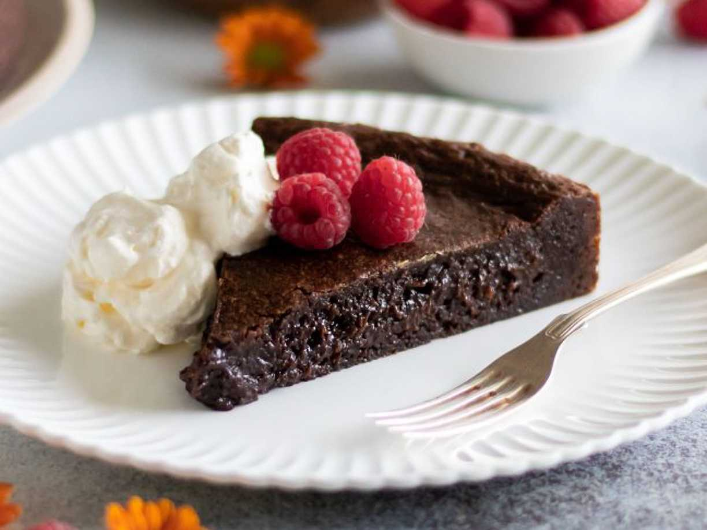

Kladdkaka

Beskrivning
Kladdkaka är en väldigt god och enkel bakelse att göra gjord på
kakao, ägg, socker, vetemjöl o lite annat smått o gött!
Ingredienser
- Smör & Ströbröd till formen
- 100 g smör
- 2 ägg
- 2 1/2 dl socker
- 3 msk kakao
- 2 tsk vaniljsocker
- 1 1/2 dl vetemjöl
- 1 krm salt
Steg
- Sätt ugnen på 200°C.
- Smörj och bröa en form med löstagbar kant, ca 24 cm i diameter (för 8 bitar) eller spänn fast ett bakplåtspapper på botten.
- Smält smöret i kastrull, låt svalna något.
- Vispa ihop ägg och socker (använd inte en elvisp).
- Blanda kakao, vaniljsocker, vetemjöl och salt i en bunke och rör ner i äggblandningnen.
- Tillsätt det smälta smöret och blanda försiktigt ihop till en jämn smet och häll sedan över smeten i formen.
- Grädda mitt i ugnen i ca 10-15 minuter (öka eller minska tiden vid behov beroende på hur kladdig du vill ha den).
- Ta ut kladdkakan och låt svalna. Sen är det bara o käka